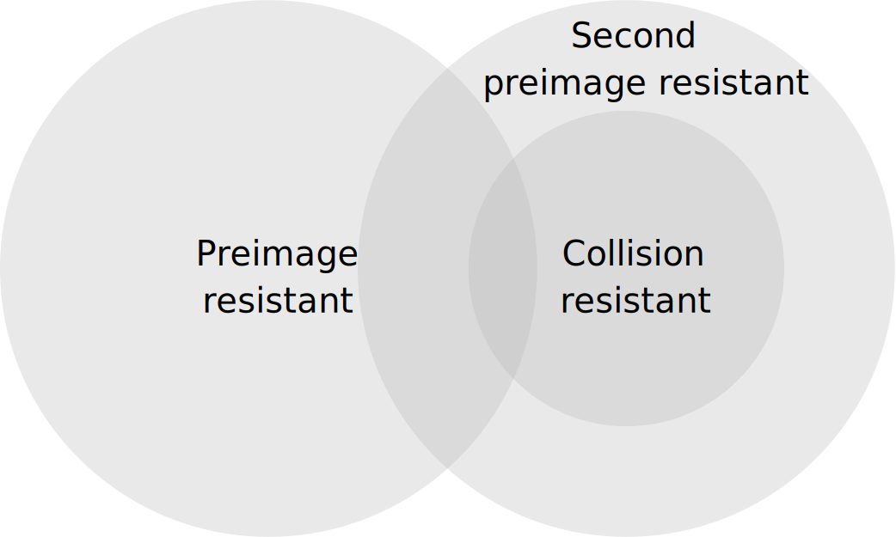
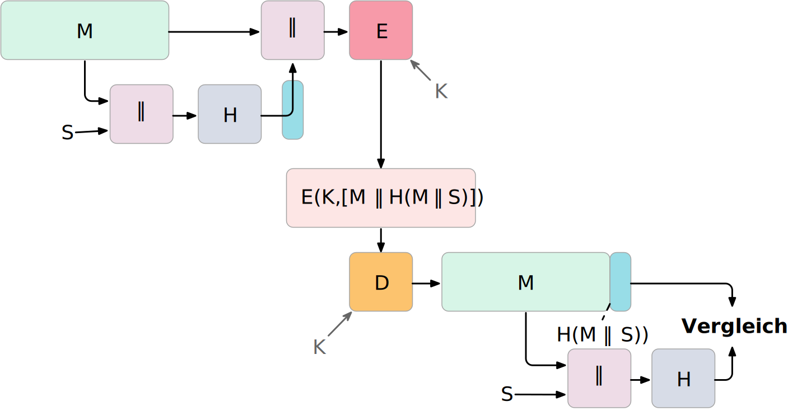
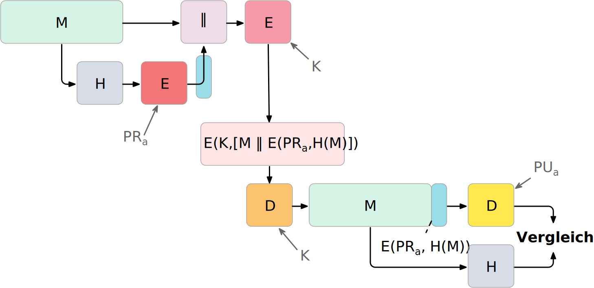
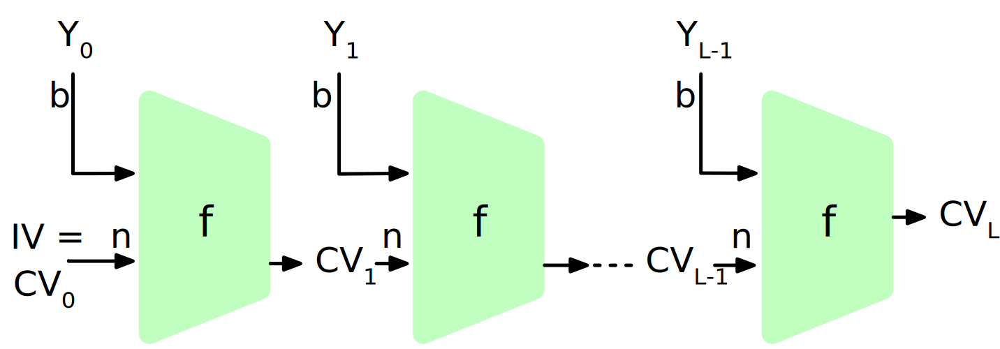
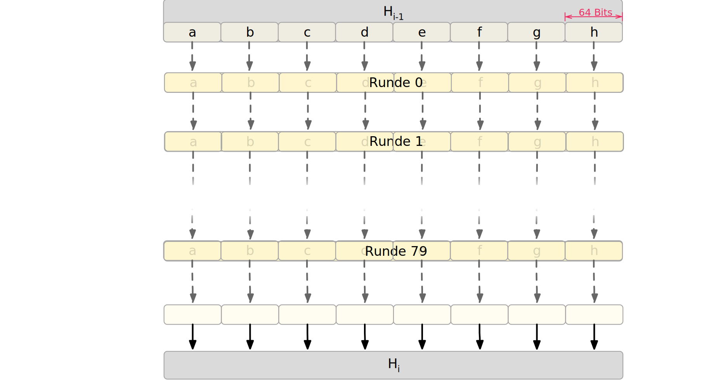
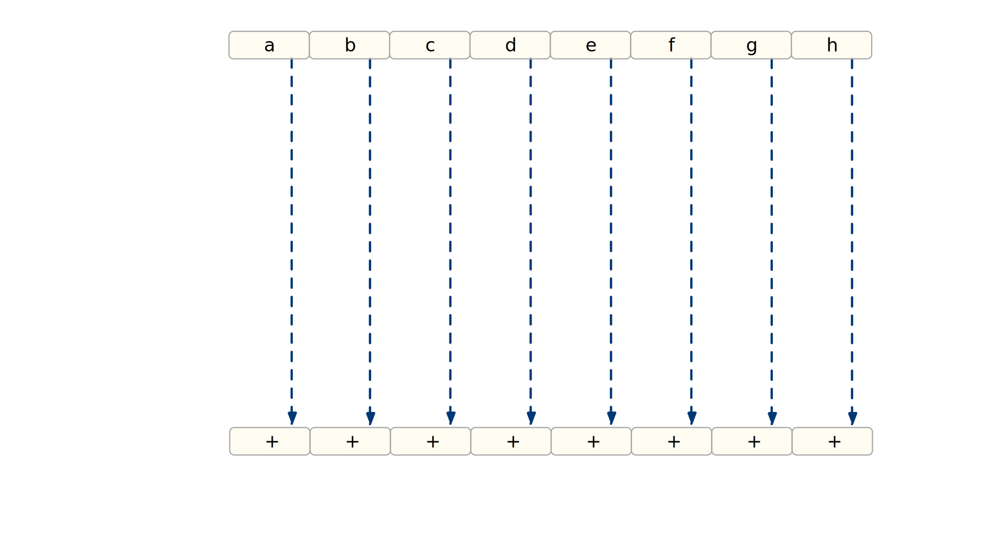
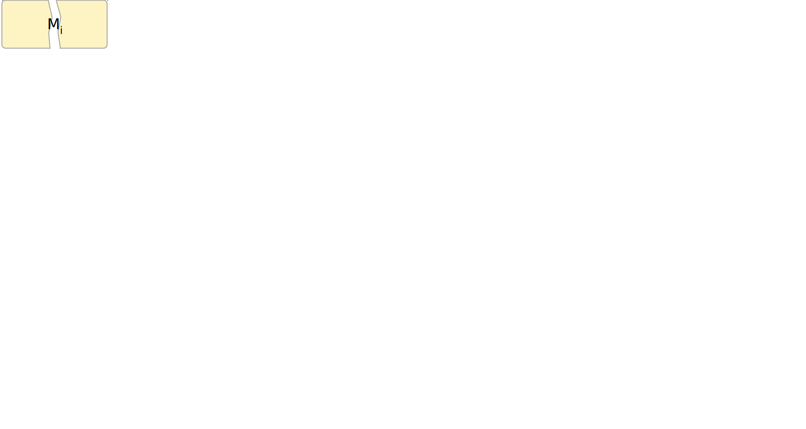
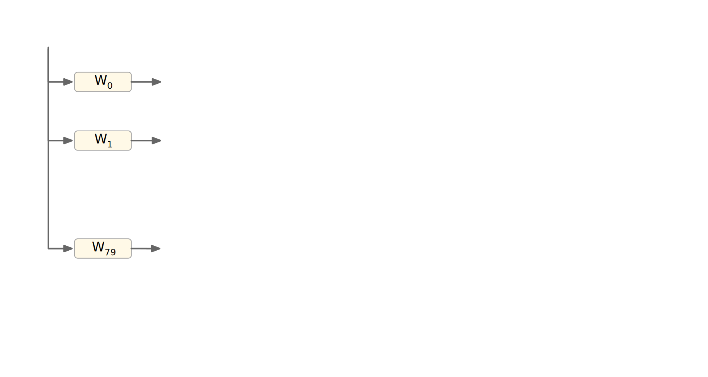
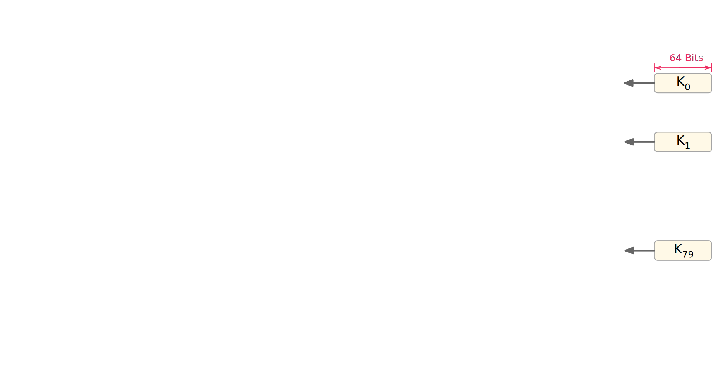

Eine Hashfunktion \(H\) akzeptiert eine beliebig lange Nachricht \(M\) als Eingabe und gibt einen Wert fixer Größe zurück: \(h = H(M)\).
Wird oft zur Gewährleistung der Datenintegrität verwendet. Eine Änderung eines beliebigen Bits in \(M\) sollte mit hoher Wahrscheinlichkeit zu einer Änderung des Hashwerts \(h\) führen.
Kryptographische Hashfunktionen werden für Sicherheitsanwendungen benötigt. Mögliche Anwendungen:
Authentifizierung von Nachrichten
Digitale Signaturen
Speicherung von Passwörtern
Beispiel: Berechnung von Hashwerten mittels MD5
md5("Hello") = 8b1a9953c4611296a827abf8c47804d7
md5("hello") = 5d41402abc4b2a76b9719d911017c592
md5("Dieses Passwort ist wirklich total sicher
und falls Du es mir nicht glaubst, dann
tippe es zweimal hintereinander blind
fehlerfrei ein.")
= 8fcf22b1f8327e3a005f0cba48dd44c8
Sicherheitsanforderungen an kryptografische Hashfunktion I
Variable Eingabegröße:
H kann auf einen Block beliebiger Größe angewendet werden.
Pseudozufälligkeit:
Die Ausgabe von \(H\) erfüllt die Standardtests für Pseudozufälligkeit.
Einweg Eigenschaft:
Es ist rechnerisch/praktisch nicht machbar für einen gegeben Hashwert \(h\) ein \(N\) zu finden so dass gilt: \(H(N) = h\)
(Preimage resistant; one-way property)
Sicherheitsanforderungen an kryptografische Hashfunktion II
Schwache Kollisionsresistenz:
Es ist rechnerisch nicht machbar für eine gegebene Nachricht M eine Nachricht N zu finden so dass gilt: \(M \neq N\) mit \(H(M) = H(N)\)
Es ist rechnerisch unmöglich ein paar \((N,M)\) zu finden so dass gilt: \(H(M) = H(N)\).
(Collision resistant; strong collision resistant)
Hintergrund
Im Deutschen wird auch von Urbild-Angriffen gesprochen. In dem Fall ist preimage resistance (d. h. die Einweg Eigenschaft) gleichbedeutend damit, dass man nicht effektiv einen „Erstes-Urbild-Angriff“ durchführen kann. Hierbei ist das Urbild die ursprüngliche Nachricht \(M\), die gehasht wurde.
Second preimage resistance ist dann gleichbedeutend damit, dass man nicht effektiv einen „Zweites-Urbild-Angriff“ durchführen kann. Es ist nicht möglich zu einer Nachricht M eine zweite Nachricht N (d. h. ein zweites Urbild) zu finden, die für eine gegebene Hashfunktion den gleich Hash aufweist.
Beziehung zwischen den Sicherheitsanforderungen an Hashfunktionen

Nachrichtenauthentifizierung - vereinfacht
Nachrichten können auf verschiedene Weisen authentifiziert werden, so dass Man-in-the-Middle-Angriffe (MitM)[1] verhindert werden können.

Szenarien
Im ersten Szenario wird der Hash an die Nachricht angehängt und als ganzes verschlüsselt. Wir erhalten Vertraulichkeit und Authentizität.
Im zweiten Szenario wird der Hash der Nachricht berechnet und dann verschlüsselt. Der Empfänger kann den Hash berechnen und mit dem entschlüsselten Hash vergleichen. Wir erhalten Authentizität, aber keine Vertraulichkeit.
Im dritten Szenario wird an die Nachricht ein geteiltes Secret angehängt und alles zusammen gehasht. Die Nachricht wird dann mit dem Ergebnis der vorhergehenden Operation zusammen verschickt.
Im letzten Szenario werden alle Ansätze kombiniert.
Legende
M:
die Nachricht
H:
die Hashfunktion
E:
der Verschlüsselungsalgorithmus
D:
der Entschlüsselungsalgorithmus
K:
ein geheimer Schlüssel
S:
eine geheime Zeichenkette
||:
die Konkatenation von zwei Werten (d. h. das Aneinanderhängen von zwei Werten)
Digitale Signaturen - vereinfacht
Digitale Signaturen dienen dem Nachweis der Authentizität einer Nachricht und der Integrität der Nachricht. Jeder, der einen öffentlichen Schlüssel hat, kann die Signatur überprüfen, aber nur der Besitzer des privaten Schlüssels kann die Signatur erstellen.

Legende
M:
die Nachricht
H:
die Hashfunktion
E:
der Verschlüsselungsalgorithmus
D:
der Entschlüsselungsalgorithmus
\(PR_a\):
der private Schlüssel von a
\(PU_a\):
der öffentliche Schlüssel von a
||:
die Konkatenation von zwei Werten (d. h. das Aneinanderhängen von zwei Werten)
Anforderungen an die Resistenz von Hashfunktionen
Preimage Resistant
Second Preimage Resistant
Collision Resistant
Hash + Digitale Signaturen
✓
✓
✓
Einbruchserkennung und Viruserkennung
✓
Hash + Symmetrische Verschlüsselung
Passwortspeicherung
✓
MAC
✓
✓
✓
Einbruchserkennung und Viruserkennung - Hintergrund
Bei der Einbruchserkennung und Viruserkennung ist second preimage Resistenz erforderlich. Andernfalls könnte ein Angreifer seine Malware so schreiben, ass diese einen Hash wie eine vorhandene gutartige Software hat und so verhindern, dass die Malware auf eine schwarze Liste gesetzt werde kann, ohne den Kollateralschaden, dass auch die gutartige Software fälschlicherweise als Malware erkannt wird.
Aufwand eines Kollisionsangriffs
Ein Kollisionsangriff erfordert weniger Aufwand als ein preimage oder ein second preimage Angriff.
Dies wird durch das Geburtstagsparadoxon erklärt. Wählt man Zufallsvariablen aus einer Gleichverteilung im Bereich von \(0\) bis \(N-1\), so übersteigt die Wahrscheinlichkeit, dass ein sich wiederholendes Element gefunden wird, nach \(\sqrt{N}\) Auswahlen \(0,5\). Wenn wir also für einen m-Bit-Hashwert Datenblöcke zufällig auswählen, können wir erwarten, zwei Datenblöcke innerhalb von \(\sqrt{2^m} = 2^{m/2}\) Versuchen zu finden.
Effizienzanforderungen an kryptografische Hashfunktionen
Effizienz bei der Verwendung für Signaturen und zur Authentifizierung:
Bei der Verwendung zur Nachrichtenauthentifizierung und für digitale Signaturen ist \(H(N)\) für jedes beliebige \(N\) relativ einfach zu berechnen. Dies soll sowohl Hardware- als auch Softwareimplementierungen ermöglichen.
vs.
Brute-Force-Angriffe auf Passwörter erschweren:
Bei der Verwendung für das Hashing von Passwörtern soll es schwierig sein den Hash effizient zu berechnen, selbst auf spezialisierter Hardware (GPUs, ASICs).
Struktur eines sicheren Hash-Codes
(Vorgeschlagen von Merkle.)

\(IV\) = Initialer Wert (Algorithmus-abhängig)
\(CV_i\) = Verkettungsvariable
\(Y_i\) = i-er Eingabeblock
\(f\) = Kompressionsfunktion
\(n\) = Länge des Blocks
\(L\) = Anzahl der Eingabeblöcke
\(b\) = Länge des Eingabeblocks
Diese Struktur liegt insbesondere den Hashfunktionen der SHA-2 Familie zugrunde.
Übung
XOR als Hashfunktion
Warum ist eine einfache „Hash-Funktion“, die einen 256-Bit-Hash-Wert berechnet, indem sie ein XOR über alle 256-Bit Blöcke einer Nachricht durchführt, im Allgemeinen ungeeignet?
Wir nehmen hier an, dass die Nachricht ein Vielfaches von 256 Bit lang ist. Falls nicht, dann wenden wir Padding an.
Eine Nachricht \(M\) bestehe aus \(N\) 64-bit Blöcken: \(X_1, \ldots, X_n\).
Der Hashcode H(M) ist ein simpler XOR über alle Blöcke: \(H(M) = h = X_1 \oplus X_2 \oplus \ldots \oplus X_n\).
\(h\) wird als der \(X_{N+1}\) Block an die Nachricht angehängt und danach wird unter Verwendung des CBC Modus die Nachricht inkl. des Hashcodes verschlüsselt (\(C = Y_1, \ldots, Y_{N+1}\)).
Gegen welche Art von Manipulation ist diese Konstruktion nicht sicher?
Irrelevanz von Second-Preimage-Resistenz und Kollisionssicherheit
Warum sind Second-Preimage-Resistenz und Kollisionssicherheit von nachgeordneter Relevanz, wenn der Hash-Algorithmus zum Hashing von Passwörtern verwendet wird?
Die Nachricht wird in 1024-Bit-Blöcke unterteilt. Die Nachricht wird - unabhängig von der tatsächlichen Länge - immer aufgefüllt (padded) und auf eine Länge \(l \equiv 896 (mod\, 1024)\) Bits gebracht.
Das Padding besteht aus einem Bit mit Wert 1, gefolgt von der notwendigen Anzahl Nullen.
Am Ende wird die Länge der Nachricht als 128-Bit-Wert angehängt, um ein Vielfaches von 1024 zu erhalten.
SHA-512 Verarbeitung eines 1024-Bit-Blocks





Die Additionen erfolgen Modulo \(2^{64}\).
Berechnung der \(W_i\)
\(W_0\) bis \(W_{15}\) sind die ersten 16 Wörter des 1024-Bit-Blocks. Die restlichen 64 Wörter werden wie folgt berechnet.
Der folgende JavaScript Code demonstriert, wie die Konstanten für SHA-512 berechnet werden bzw. wurden. Die Präzision von Standard JavaScript Gleitkommazahlen (64-Bit Double) ist jedoch nicht ganz ausreichend, um die Konstanten vollständig zu berechnen.
Der folgenden Java Code demonstriert, wie die Konstanten für SHA-512 berechnet werden können. Wir verwenden hier die Klasse BigDecimal, um die Konstanten zu berechnen, da Java keinen long double Typ (mit 128 Bit) kennt.
1 /**
2 * Compute the cube root using BigDecimals and the Newton-Raphson
3 * algorithm.
4 *
5 * @param n the number for which the cube root should be computed.
6 * @param guess the current/initial guess. Can be BigDecimal.ONE.
7 * @param the number of steps to be executed. The algorithm is
8 * iterative and the number of steps determines the
9 * precision of the result.
10 */11 BigDecimalcbrt(BigDecimaln,BigDecimalguess,intsteps){12 if(steps==0)returnguess;13 finalvarnewGuess=14 guess.add(15 guess.pow(3).add(n.negate()).divide(16 guess.pow(2).multiply(newBigDecimal(3)),17 MathContext.DECIMAL12818 ).negate()19 );20 returncbrt(n,newGuess,steps-1);21 }22 /**
23 * Given a prime number get the first 64 bits of the fractional
24 * part of the cube root.
25 */26 StringshaConstant(intprime){27 finalvarcubeRoot=cbrt(newBigDecimal(prime),BigDecimal.ONE,16);28 // "extract" the fractional by computing modulo 129 finalvarfractionalPart=cubeRoot.remainder(BigDecimal.ONE);30 // To extract the first 64 bits we effectively do a shift-left31 // by 64 which we simulate by multiplying with 2^6432 finalvarbits=fractionalPart.multiply(BigDecimal.TWO.pow(64));33 // to get the HEX representation we use BigInteger's toString34 // method as a convenience method35 returnbits.toBigInteger().toString(16);36 }
Message Authentication Codes (MACs)
HMAC (Hash-based Message Authentication Code)
Auch als keyed-hash message authentication code bezeichnet.
\begin{align*}
\begin{array}{rcl}
HMAC(K,m) & = & H( (K' \oplus opad) || H( ( K' \oplus ipad) || m) ) \\
K' & = &\begin{cases}
H(K) & \text{falls K größer als die Blockgröße ist}\\
K & \text{andernfalls}
\end{cases}
\end{array}
\end{align*}
\(H\) is eine kryptografische Hashfunktion.
\(m\) ist die Nachricht.
\(K\) ist der geheime Schlüssel (Secret Key).
\(K'\) ist vom Schlüssel K abgeleiteter Schlüssel mit Blockgröße (ggf. padded oder gehasht).
\(||\) ist die Konkatenation.
\(\oplus\) ist die XOR Operation.
\(opad\) ist das äußere Padding bestehend aus Wiederholungen von 0x5c in Blockgröße.
\(ipad\) ist das innere Padding bestehend aus Wiederholungen von 0x36 in Blockgröße.
HMAC Berechnung visualisiert
Padding und Hashing
Im Rahmen der Speicherung von Passwörtern und Secret Keys ist die Verwendung von Padding Operationen bzw. das Hashing von Passwörtern, um Eingaben in einer wohl-definierten Länge zu bekommen, üblich. Neben dem hier gesehenen Padding, bei dem 0x00 Werte angefügt werden, ist zum Beispiel auch das einfache Wiederholen des ursprünglichen Wertes, bis man auf die notwendige Länge kommt, ein Ansatz.
Diese Art Padding darf jedoch nicht verwechselt werden mit dem Padding, dass ggf. im Rahmen der Verschlüsselung von Nachrichten notwendig ist, um diese ggf. auf eine bestimmte Blockgröße zu bringen (zum Beispiel bei ECB bzw. CBC Block Mode Operations.)
HMAC Berechnung in Python
Implementierung
importhashlibpwd=b"MyPassword"stretched_pwd=pwd+(64-len(pwd))*b"\x00"ikeypad=bytes(map(lambdax:x^0x36,stretched_pwd))# xor with ipadokeypad=bytes(map(lambdax:x^0x5c,stretched_pwd))# xor with opadhash1=hashlib.sha256(ikeypad+b"JustAMessage").digest()hmac=hashlib.sha256(okeypad+hash1).digest()# hmac =# b'\xab\xa0\xd9\xe2\x8ar\xc8\x081\x8e\x1b\x1d,# \x8f\xa6\xd6L\x94\xab\x89\x9a\x89*\xc7\x0f_no\xc1\xdc6\xfc'
HMAC ist auch direkt als Bibliotheksfunktion verfügbar.
Ein MAC Algorithmus für die Einmalauthentifizierung von Nachrichten.
Entwickelt von Daniel J. Bernstein.
Basierend auf einem 256-Bit-Schlüssel und einer Nachricht wird ein 128-Bit-Tag berechnet.
In Verbindung mit ChaCha20 in einer Reihe von Protokollen verwendet.
Aufteilung des Schlüssels
Verarbeitung der Nachricht
initialisiere den Akkumulator \(a\) mit 0
die Nachricht wird in Blöcke von 16 Byte aufgeteilt und als little-endian Zahl verarbeitet; d. h. ein Block hat 16 Oktette (\(16 \times 8\) Bit)
Füge dem Block \(n\) ein Bit jenseits der Anzahl der Oktette des aktuellen Blocks hinzu \(= n'\); d. h. im Falle eines 16-Byte-Blocks wird die Zahl \(2^{128}\) addiert
(Danach haben wir ggf. eine 17-Byte-Zahl.)
Addiere \(n'\) aus dem letzten Schritt zum Akkumulator \(a\) und multipliziere mit \(\text{clamped r}\)
Aktualisiere den Akkumulator mit dem Ergebnis \(modulo\, P\) mit \(P = 2^{130} - 5\):
\(a = ((a + n') \times \text{clamped r})\mod P\)
Dadurch, dass wir den Block als Zahl in little-endian Reihenfolge interpretieren, ist das hinzufügen des Bits jenseits der Anzahl der Oktette gleichbedeutend damit, dass wir den Wert 0x01 am Ende des Blocks hinzufügen.
Zusammenfassung
Ein Hashwert dient der Integritätssicherung von Nachrichten.
Ein Mac dient der Authentifizierung von Nachrichten.
Ein Mac sichert auch immer die Integrität der Nachricht.
Es ist somit möglich die Integrität einer Nachricht zu sichern ohne Authentizität zu gewährleisten, aber nicht umgekehrt.
Ein Mac erlaubt es dem Empfänger eine gefälschte Nachricht zu erkennen aber ggf. auch zu erstellen (to forge a message).
Eine Signatur basiert auf einem Hashwert und einem privaten Schlüssel.
Der Empfänger kann bei einer signierten Nachricht, diese nicht verändern und als eine Nachricht des Senders ausgeben.
Nur für Nachrichten, die signiert sind, gilt somit die Nichtabstreitbarkeit (non-repudation).